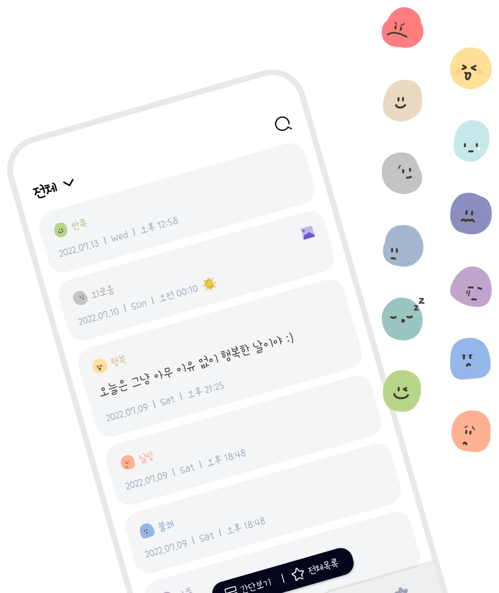
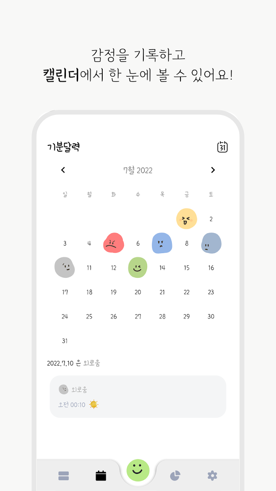
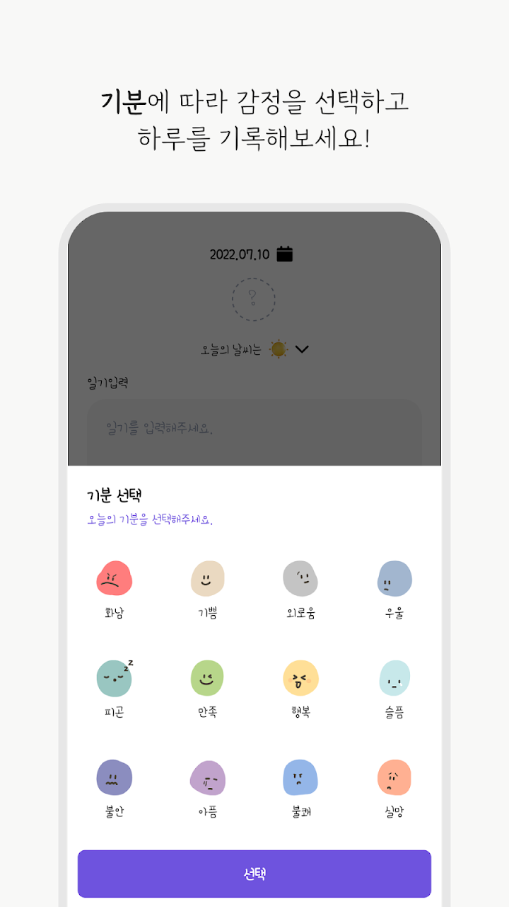
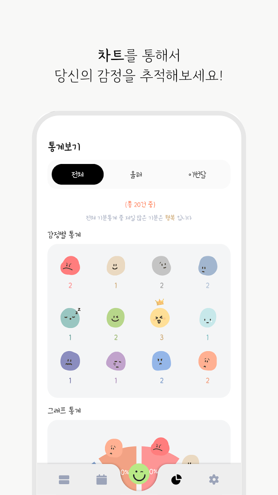
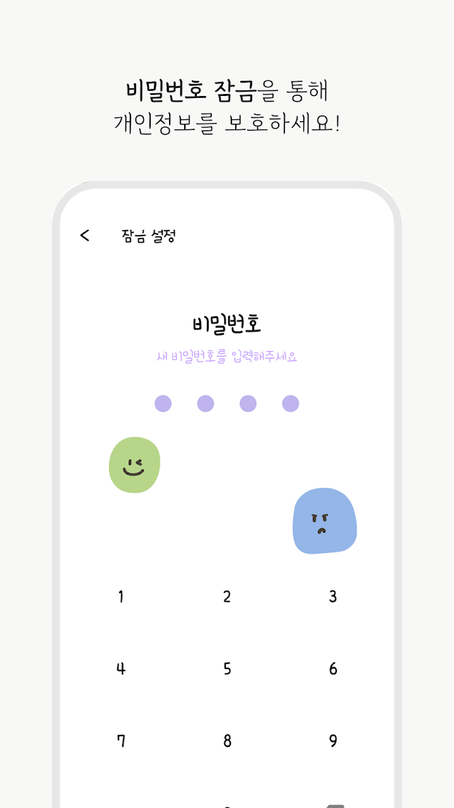
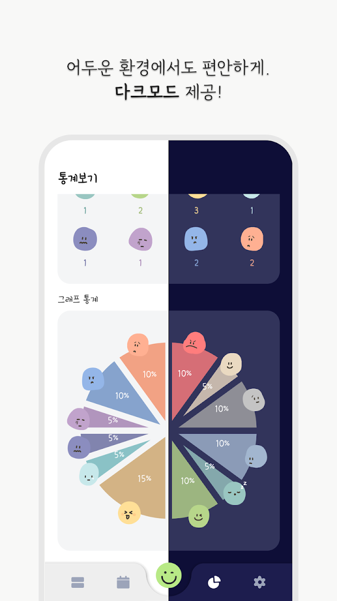

#01
감정 이모티콘 기록
말로 설명하기 어려운 마음도 이모티콘 하나로. 긴 글이 부담스러운 날엔 기분만 골라도 돼요.
감정 하나, 짧은 문장 하나, 사진 한 장이면
오늘의 일기가 완성돼요.
달력과 통계로 내 마음의 흐름을 돌아보세요.






말로 설명하기 어려운 마음도 이모티콘 하나로. 긴 글이 부담스러운 날엔 기분만 골라도 돼요.
하루하루 기록한 기분을 달력에서 한눈에 보고, 잊고 있던 날을 다시 만나요.
어떤 감정을 자주 느꼈는지, 기분이 어떻게 변해왔는지 그래프로 확인해요.
좋아하는 사람, 맛있었던 음식, 여행지 풍경을 사진과 글로 간직해요.
나만의 비밀일기장에 마음속 이야기를 편하게 남기세요.
휴대폰을 바꾸거나 앱을 다시 설치해도 백업에서 복원할 수 있어요.
작성한 일기를 TXT 파일로 내보내 앱 밖에서도 보관해요.
원하는 글꼴과 시스템·라이트·다크 모드로 취향대로 꾸며요.